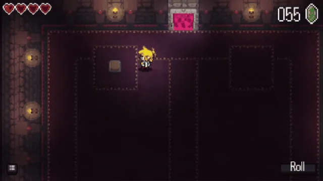

Pots of Pottimea
A Zelda-inspired action RPG that I designed and built solo in Unity over one semester.
- 39 C# scripts covering movement and animation state, enemy AI, health and damage, destructibles and projectiles, menus and UI.
- NPC navigation built on the A* Pathfinding Project.
- I came back to it two years later for my capstone, which gave its companion character a language model.
The repository includes a Windows build. It uses Git LFS, so clone it rather than downloading the ZIP.